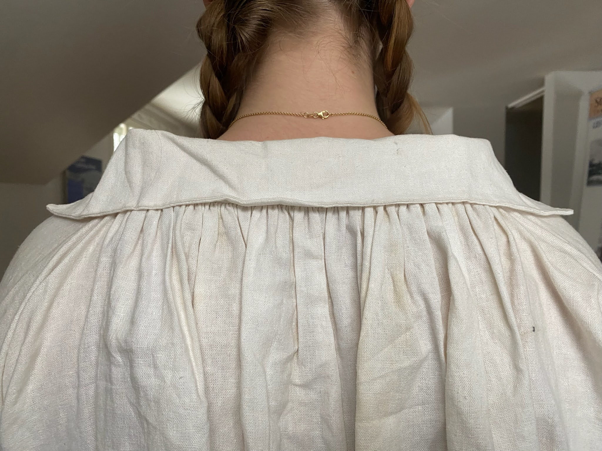
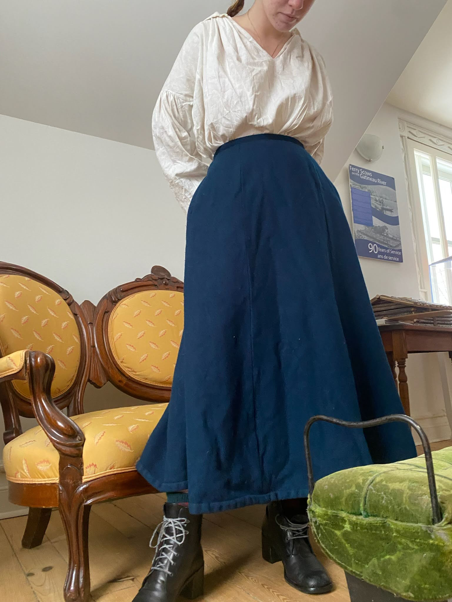
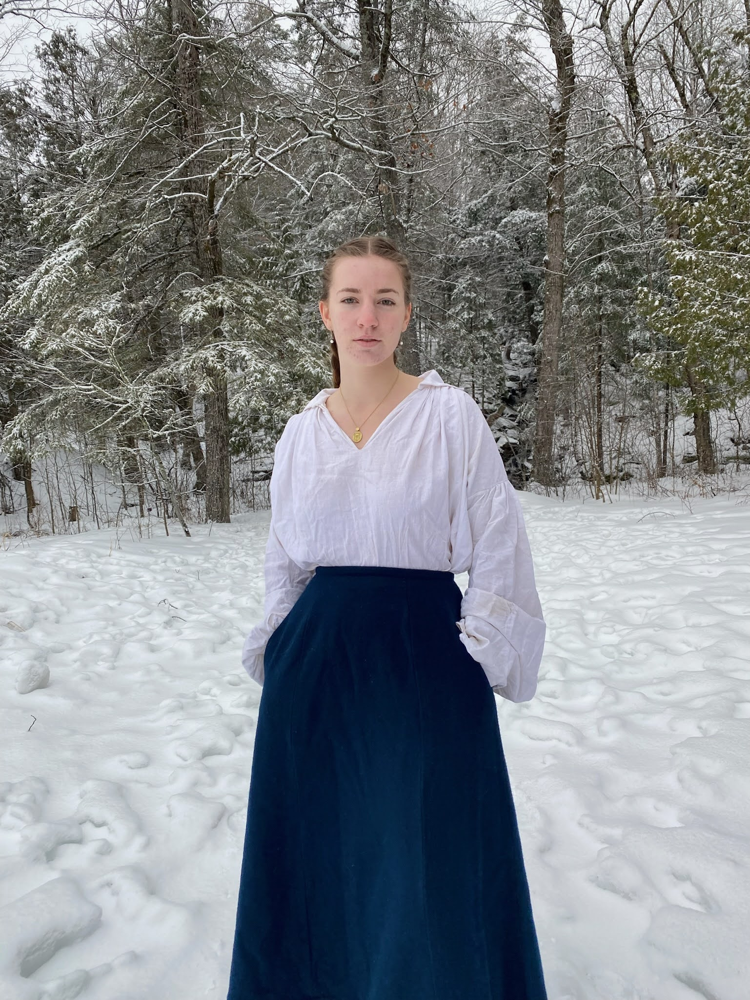
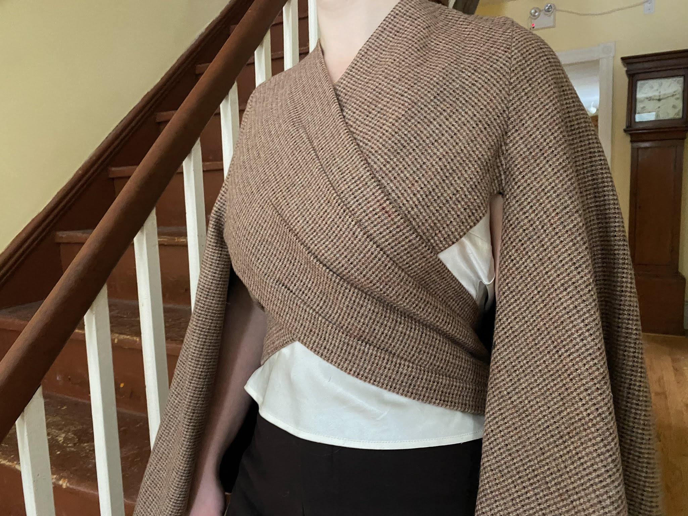
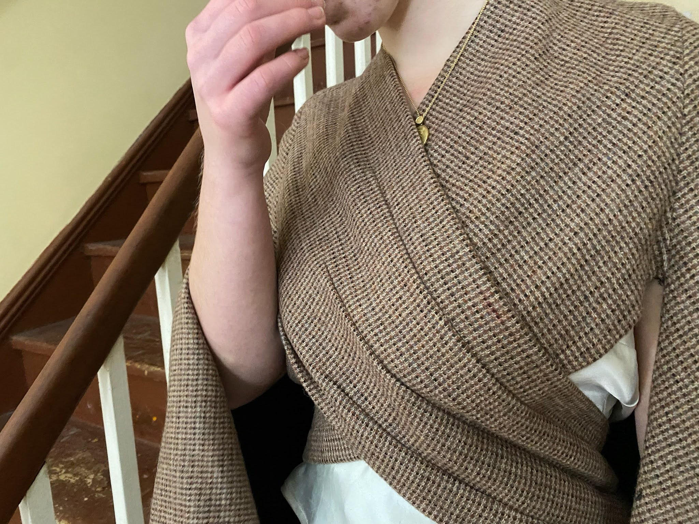

Other Historical Pieces
-
18th century men’s shirt
My entirely hand stitched 18th century men’s shirt. This is one of my absolute favorite creations. The classic piece is appropriate to decades (if not centuries) of history on top of being wearable day to day (if you can manage the sleeves).

-
1890s walking skirt
My 1890s walking skirt. This simple piece stars the wonderful bell-shaped silhouette of the 1890s and the practical bound hem of the Victorian era. The only hand stitching is the backside of the hem binding and the pockets.


-
My 1910s wrap cape
I have a love hate relationship with this work. Given that it’s one of the first things I’ve sewn, and my first historic piece, it is riddled with mistakes. Yet, the over all outcome is pretty close to the goal. It was a good learning project.

